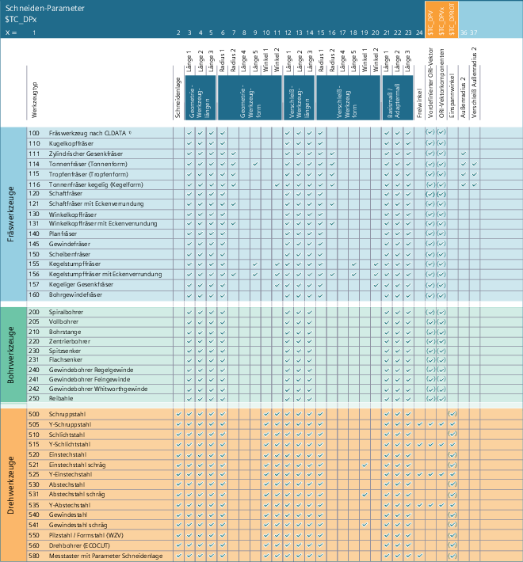
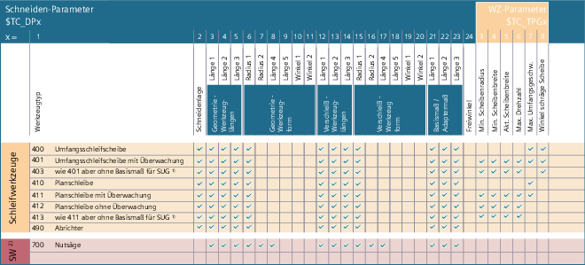

Jedem Werkzeugtyp ist eine eindeutige 3-stellige Nummer zugeordnet. Über die erste Ziffer (Hunderterstelle) erfolgt die Zuordnung des Werkzeugs zu einer der folgenden Technologien bzw. Werkzeuggruppen:
Werkzeugtyp | Werkzeuggruppe |
|---|---|
1xy | |
2xy | |
3xy | reserviert |
4xy | |
5xy | |
6xy | reserviert |
7xy |
Die für ein Werkzeug einzutragenden Parameterwerte (Werkzeugkorrekturdaten; TOA-Daten) werden in Systemvariablen abgelegt. Einige Werkzeugparameter können, abhängig vom Werkzeugtyp, unterschiedliche Bedeutungen haben.
WZ-Parameter | Bedeutung | |
|---|---|---|
$TC_DP1 | Werkzeugtyp | |
$TC_DP2 | Schneidenlage | Für Drehwerkzeuge oder für Fräs-/Schleifwerkzeuge bei 2D-WRK mit Konturwerkzeugen. |
| ||
$TC_DP3 | Geometrie Länge 1 | |
$TC_DP4 | Geometrie Länge 2 | |
$TC_DP5 | Geometrie Länge 3 | |
| ||
$TC_DP6 1) | Geometrie Radius 1 (WZ-Radius 1) | 2D-WRK |
Schneidenradius | Drehwerkzeuge | |
Werkzeugradius | 3D-Stirnfräsen | |
Durchmesser | Nutsäge | |
$TC_DP7 1) | Geometrie Radius 2 | Werkzeuge mit Eckenverrundung |
Außenradius 1 | Planfräser | |
Eckenradius | Fräswerkzeuge mit Eckenverrundung | |
Nutbreite | Nutsäge | |
$TC_DP8 1) | Geometrie Länge 4 | Fräs-/Schleifwerkzeuge |
Plattenlänge | Drehwerkzeuge | |
Innenkreis - Prime | Prime-Werkzeuge | |
Überstand | Nutsäge | |
$TC_DP9 1) | Geometrie Länge 5 | Fräs-/Schleifwerkzeuge |
Breite | Scheibenfräser | |
Säge | ||
Plattenbreite | Drehwerkzeuge | |
Steigung | Gewindebohrer | |
WZ-Radius Drehbohrer (Bohrlochradius) | Drehbohrer | |
Schnittgeschwindigkeit (ManualTurn) | Fräswerkzeuge | |
Oberer Kegeldurchmesser | Kegelstumpffräser, Kegeliger Gesenkfräser → 3D-Stirnfräsen | |
Bezugslänge für Außenradius | Tonnenfräser | |
$TC_DP10 1) | Geometrie Winkel 1 | Fräs-/Schleifwerkzeuge |
Minimaler Grenzwinkel | 2D-WRK mit Konturwerkzeugen | |
Halterwinkel | Drehwerkzeuge | |
Spitzenwinkel | Bohr-Gewinde-Fräser | |
Korrekturwinkel | Messtaster | |
$TC_DP11 1) | Geometrie Winkel 2 | 2D-WRK mit Konturwerkzeugen: Maximaler Grenzwinkel 3D-Stirnfräsen: Winkel zwischen Mantellinie und Werkzeuglängsachse (bei kegelförmigen Werkzeugen) |
Schnittrichtung | Drehwerkzeuge | |
Winkel | Konische Fräswerkzeuge | |
| ||
$TC_DP12 | Verschleiß Länge 1 | |
$TC_DP13 | Verschleiß Länge 2 | |
$TC_DP14 | Verschleiß Länge 3 | |
| ||
$TC_DP15 | Verschleiß Radius 1 | |
$TC_DP16 | Verschleiß Radius 2 | |
$TC_DP17 | Verschleiß Länge 4 | |
$TC_DP18 | Verschleiß Länge 5 | |
$TC_DP19 1) | Verschleiß Winkel 1 | |
Schräglage | Schräge Drehwerkzeuge | |
$TC_DP20 | Verschleiß Winkel 2 | |
| ||
$TC_DP21 | Basis Länge 1 | |
$TC_DP22 | Basis Länge 2 | |
$TC_DP23 | Basis Länge 3 | |
| ||
$TC_DP24 1) | Freiwinkel | Drehwerkzeuge |
Zähnezahl | Fräswerkzeuge | |
Spitzenwinkel | Bohrwerkzeuge | |
| ||
$TC_DPV | Vordefinierter Orientierungsvektor | |
$TC_DPV3 | Werkzeuggrundorientierung: L1-Komponente des Orientierungsvektors | |
$TC_DPV4 | Werkzeuggrundorientierung: L2-Komponente des Orientierungsvektors | |
$TC_DPV5 | Werkzeuggrundorientierung: L3-Komponente des Orientierungsvektors | |
$TC_DPVN3 | Werkzeuggrundorientierung: L1-Komponente des Normalenvektors | Nur für nicht-rotationssymmetrische Werkzeuge. |
$TC_DPVN4 | Werkzeuggrundorientierung: L2-Komponente des Normalenvektors | Nur für nicht-rotationssymmetrische Werkzeuge. |
$TC_DPVN5 | Werkzeuggrundorientierung: L3-Komponente des Normalenvektors | Nur für nicht-rotationssymmetrische Werkzeuge. |
$TC_DPNT | Zähnezahl, Schneidenparameter 34 | |
| ||
$TC_DPNT | Zähnezahl | Fräswerkzeuge |
$TC_DPROT | Einspannwinkel | Nur für Drehwerkzeuge. |
$TC_DP36 1) | Außenradius 2 | Tonnenfräser, Tropfenfräser |
$TC_DP37 1) | Verschleiß Außenradius 2 | Tonnenfräser, Tropfenfräser |
| ||
$TC_DP_RADIUS3 1) | Geometrie Radius 3 | |
$TC_DP_WEAR_RADIUS3 1) | Verschleiß Radius 3 | |
$TC_DP_LEN6 1) | Geometrie Länge 6 | |
$TC_DP_WEAR_LEN6 1) | Verschleiß Länge 6 | |
$TC_DPCE [<t>,<d>] | Systemvariable eines Korrekturdatensatzes mit T=<t> und D=<d>, der die Schneidennummer CE enthält. (eindeutige D-Nr. oder auch freie Vergabe von D-Nr. zur Schneidennr.) | Wertebereich erlaubter Schneidennummern: 1, 2, 3 ... MD18106 |
$TC_DPH [<t>,<d>] | H-Parameter (Y / extraCuttEdgeParams), Bit 0 = 1 | |
Welche Parameterwerte für welchen Werkzeugtyp erforderlich sind, zeigen folgende Tabellen:
1) | CLDATA = "cutter location data" (Werkzeugpositionsdaten nach DIN66215) |
Werkzeugparameter für Fräs-, Bohr und Drehwerkzeuge
1) | SUG = Schleifscheibenumfangsgeschwindigkeit |
2) | SW = Sonderwerkzeuge |
Werkzeugparameter für Schleif- und Sonderwerkzeuge
| Hinweis |
Insbesondere bei den Schleifwerkzeugen (400-499) sind auch nicht aufgeführte Nummern zulässig. |
Siehe auch:
Werkzeug-Korrekturspeicher